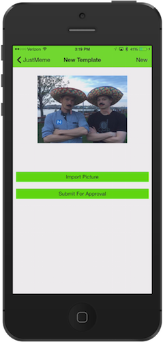
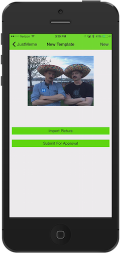
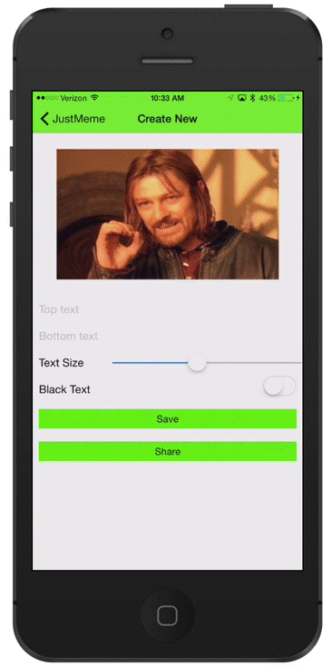
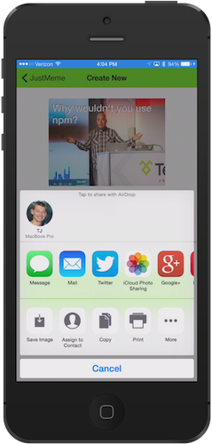
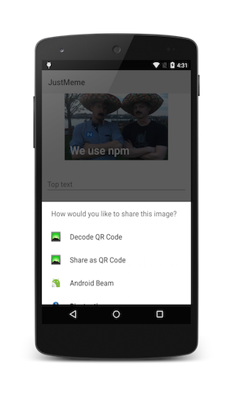

Introduction
What is this?
This is an opinionated guide to building native mobile apps with NativeScript. The advice this guide prescribes is by no means mandatory, however, the very opinionated authors of this guide believe that following these guidelines will help you produce high-quality, maintenance friendly, and performant apps with NativeScript.
Feel free to ignore tips that don't apply to your projects, or to build upon this advice based on your app's requirements. If you find an error in this guide, or would like to suggest new guidelines, feel free to open an issue in this guide's GitHub repo.
Why use NativeScript?
NativeScript provides the ability to build completely native iOS and Android apps using standards-based JavaScript. As such, NativeScript is a great fit for anyone with a JavaScript skill set that wants or needs to build native mobile applications.
NativeScript allows you to reuse JavaScript skills you already know. For example this guide will show you how to use npm modules in your app, how to lint your code with JSHint and JSCS, and how to write modules that adhere to the CommonJS spec.
But perhaps NativeScript's characterizing feature is the direct access it gives you to native iOS and Android APIs. This access makes it trivial to make iOS- and Android-specific customizations to your apps, and to build NativeScript modules that abstract away the platform-specific implementations. This guide will cover both.
Who wrote this?
The following people have contributed to this guide in some fashion—aka, if you disagree with the advice this guide presents, here are some people you can yell at:
- TJ VanToll | @tjvantoll
Prerequisites
This guides assumes you know how to create and run a NativeScript project. If you don't, start on the NativeScript getting started page, and come back here when you've got the NativeScript basics down and are looking to create a real app.
JustMeme application
This guide's example are given in the context of an application called “JustMeme”. JustMeme is a NativeScript-built iOS and Android application for building memes and sharing them with your friends and family. JustMeme's source code is available on GitHub, and you can also download the app from the iOS app store.
 


Best Practices
The following are a set of best practices to adhere to when building NativeScript apps.
Use NativeScript's MVVM implementation
NativeScript has a robust MVVM implementation that allows you to bind data in JavaScript objects to native UI elements; use it, as it'll make your code a lot cleaner.
As an example of this MVVM approach in use let's refer to the create meme page in JustMeme. Here's a gif that shows the page in action:

And here's a simplified snippet of the XML that builds this UI:
<Image imageSource="{{ memeImage }}" />
<TextField hint="Top text" text="{{ topText }}" />
<TextField hint="Bottom text" text="{{ bottomText }}" />
<Label text="Text Size" />
<Slider minValue="10" maxValue="100" value="{{ fontSize }}" />
<Label text="Black Text" />
<Switch checked="{{ isBlackText }}" />
The crux of this page's implementation is responding to user actions. As soon as the user types some text, or adjusts the slider, or toggles the switch, you have to update the image the user sees. The hardest implementation detail here is actually detecting when those changes occur—that is, how do you know when the user types in the TextField, or slides the slider?
Because JustMeme uses NativeScript's observables and MVVM implementation, however, the implementation is actually quite easy.
var observable = require("data/observable");
var imageManipulation = require("../../shared/image-manipulation/image-manipulation");
// The Meme object's constructor
function Meme() {
var that = this;
// Listen for all property changes and call draw
this.addEventListener(observable.Observable.propertyChangeEvent, function() {
that.draw();
});
};
// Have the Meme object extend the NativeScript Observable object
Meme.prototype = new observable.Observable();
Meme.prototype.draw = function() {
// The code that actually draws text on the image
var image = imageManipulation.addText({
image: this.image,
topText: this.topText,
bottomText: this.bottomText,
fontSize: this.fontSize,
isBlackText: this.isBlackText
});
this.set("image", image);
};
Don't worry too much about the details of what this code is doing. The key thing to notice is how this code interacts with the UI, or more specifically, that it doesn't. Notice how there's no need to reference individual UI elements, or to listen for text box changes or switch toggles. Instead this code just listens for property changes:
this.addEventListener(observable.Observable.propertyChangeEvent, function() {
that.draw();
});
Every time any property on the meme object bound to the UI changes, NativeScript fires a property change event, and the meme object's draw() function runs and updates the image.
Decoupling a UI from its JavaScript logic is the key principal of the MVVM architecture, and it makes all sorts of things possible. For instance you can easily change things in the UI without worrying about breaking the backing JavaScript code. Because the Meme object is not coupled to any specific UI it's also reusable. You'll find the Meme object used in several different places throughout JustMeme.
Use npm modules to solve problems
npm has over 100,000 modules. If you have a problem there's a decent chance that someone has already written a module to solve that problem for you. Not every npm module is going to work with NativeScript, for example modules that depend on the DOM (e.g. Kendo UI), but a whole lot of them will. Let's look at a few that do.
Remember the create meme page from before? If not I've included a gif of it again below as a reminder.
When we were originally developing this app we had a problem with this page, specifically with the Text Size slider. We redraw the image on each property change, and if the user takes the slider and goes nuts with it, NativeScript is going to generate a ton of events.
Which is fine, except drawing an image dozens of times a second is not exactly the most advisable thing to do from a performance perspective. Some high-end devices were up for the challenge, but our low-end Android devices never stood a chance. What we needed was to add some basic rate limiting. We could've rolled our own, but that would be silly because underscore and lodash already have really good implementations. If you look at the Meme object you'll now see the following code:
var _ = require("../../node_modules/lodash/index");
function Meme() {
var that = this;
var debouncedRefresh = _.debounce(function() {
that.refresh();
}, 50, { leading: true });
this.addEventListener(observable.Observable.propertyChangeEvent, function() {
debouncedRefresh();
});
}
...
You can refer lodash's docs for a full explanation of how _.debounce() works, but essentially it ensures a function is not called every n milliseconds, in this case 50. The key here is not the specific implementation, but rather that we were able to solve a tricky people fairly easily by using existing solutions instead of rolling our own.
This same convenience applies to third-party NativeScript modules as well, as they are also stored on npm. For instance, the JustMeme app allows users to share their memes through Facebook, Twitter, SMS, etc, and that functionality is also implemented with an npm module. Here's the code from the same Meme object:
var socialShare = require("../../node_modules/nativescript-social-share/social-share");
function Meme() {
...
}
Meme.prototype.share = function() {
socialShare.shareImage(this.image);
}
...
And with that, JustMeme users can share their creations with the world:
 
If you're wondering what other NativeScript modules are out there, do a search for “nativescript” on npm and look around.
Folder structure
NativeScript gives you the flexibility to place files pretty much wherever you want, but having a few conventions can aid with maintainability, especially on large apps.
Folder structure overview
Let's look at the folder structure JustMeme uses from the outside in. Here's what the structure looks like top level:
.
├── app
│ └── [[ continued below ]]
├── node_modules
│ └── ...
├── package.json
└── platforms
└── ...
NativeScript enforces the use of app and platform directories, where app contains your development code and platform contains the platform-specific code NativeScript needs to build native iOS and Android apps.
Note: If you're using NativeScript as part of Telerik AppBuilder you won't have a
platformsfolder, as AppBuilder performs all iOS and Android builds for you in the cloud, thus removing the need for these files to be locally available on your development machine.
Next let's look inside the app directory, where your development code resides. Here's a simplified version of JustMeme's structure:
.
├── App_Resources
│ └── ...
├── images
│ ├── background.png
│ └── ...
├── lib
│ └── ...
├── shared
│ ├── analytics.js
│ ├── navigation.js
│ ├── utilities.js
│ └── ...
├── tns_modules
│ └── ...
├── views
│ ├── create-meme
│ │ ├── create-meme.css
│ │ ├── create-meme.js
│ │ └── create-meme.xml
│ ├── home
│ │ ├── home.css
│ │ ├── home.js
│ │ └── home.xml
│ └── ...
├── app.css
├── app.js
└── package.json
Here's the intention of each of these directories:
- App_Resources: This is a NativeScript-enforced directory. It contains your platform-specific files such as icons, splash screens and configuration files (e.g. Info.plist, AndroidManifest.xml, and so forth).
- images: This is where all the images your application uses should live. If you have a lot of images it makes sense to group them into further directories. For instance JustMeme uses
iconsandtemplatesdirectories to group its images. - lib: This is where third-party libraries that aren't available on npm should reside. Grouping all third-party libraries makes it easy to exclude these files from linting tools (e.g. JSHint, JSCS).
- shared: This directory contains all code shared between views. As with images, it makes sense to logically group these files into subdirectories.
- tns_modules: This is a NativeScript-enforced directory that contains the NativeScript core modules.
- views: Each view in your app should have a directory in this folder that contains its CSS, JavaScript, and XML files. If you have a large number of views you may wish to create additional subdirectories to group these views.
The advantage of this approach is that it's really easy to tell where files should go. Building a new view? That goes in views. Building a model object for use throughout the app? That goes in shared. Want to use a JavaScript library you found on GitHub but isn't in npm? That goes in lib.
This approach also means that all your development code lives within the shared and views directories, which makes these files really easy to target with tooling, which is the topic of chapter 3. The remaining sections in this chapter contain additional tips about using this structure.
Exclude the platforms folder from source control
The platforms folder contains NativeScript-generated code for each platform your app runs on. Because this code is generated it doesn't belong in source control. If you're a git user you can exclude this folder by adding platforms to your .gitignore.
Exclude the node_modules folder from source control
The node_modules folder can be generated from your package.json, so it should also should be excluded from source control. If you're a git user you can exclude the folder by adding node_modules/ to your .gitignore.
Tooling
...